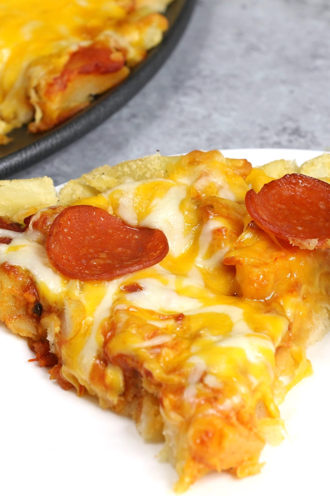

Pepperoni Pizza Fries (Loaded French
Fry Pizza Recipe)
The recipe source!

Description
Pepperoni Pizza Fries are loaded with crispy French fry pizza crust and cheesy pepperoni toppings.
This is a special pizza you've
never had before! It's so easy to make and you can use frozen, freshly
cooked, or leftover French fries. Great for a game day party
or any fun dinner parties.
Ingredients
For the pizza crust:
- 4 cups French fries (frozen or freshly cooked)
- 1/2 cup cornstarch
- salt and pepper (to taste)
For the Toppings:
- 3/4 cup marinara sauce (or pizza sauce)
- 2 cups shredded cheese (I used the mix of mozzarella and Swiss cheese)
- 12-15 pepperoni slices
Instructions
Make the Crust
- Remove the French fries from the freezer and let them thaw for about
5-10 minutes (you don't need to let it thaw completely).
- Preheat oven to 400°F and set aside a pizza pan.
- In a large mixing bowl, add French fries, then use a fork to mash them
into smaller pieces.
- Add cornstarch, salt, and pepper. Mix well.
- Pour the French fries onto the pizza pan.
- Press the pieces together to make the crust. (Make sure to press them as
much as possible.)
Add the Toppings
- Add marinara sauce on top of the crust, and spread it out evenly.
- Sprinkle the shredded cheese on top of the sauce.
- Add pepperoni slices.
Bake the Pizza and Serve
- Bake for 15-20 minutes or until the cheese is melted.
- Remove from the oven and let it cool for a few minutes. Serve with a pie
server and enjoy!
Back to recipes